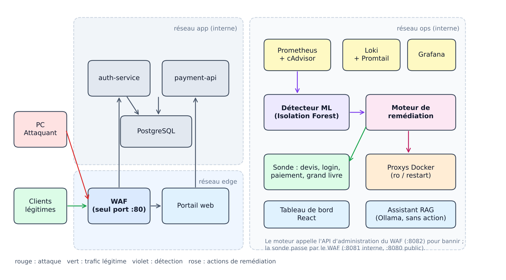
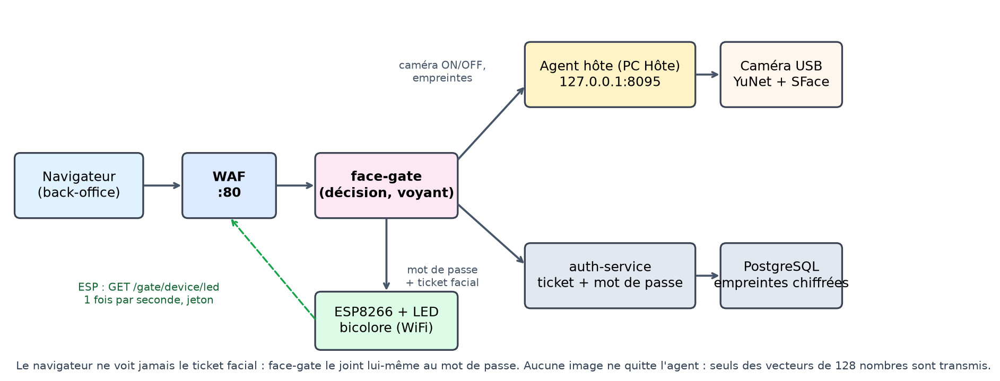
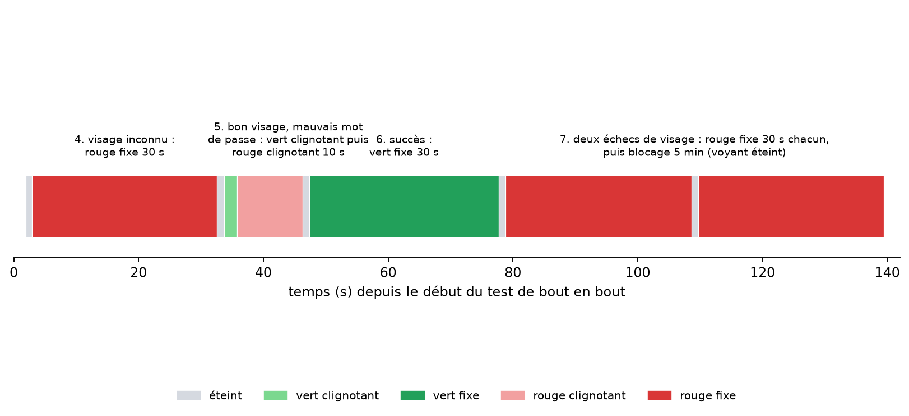
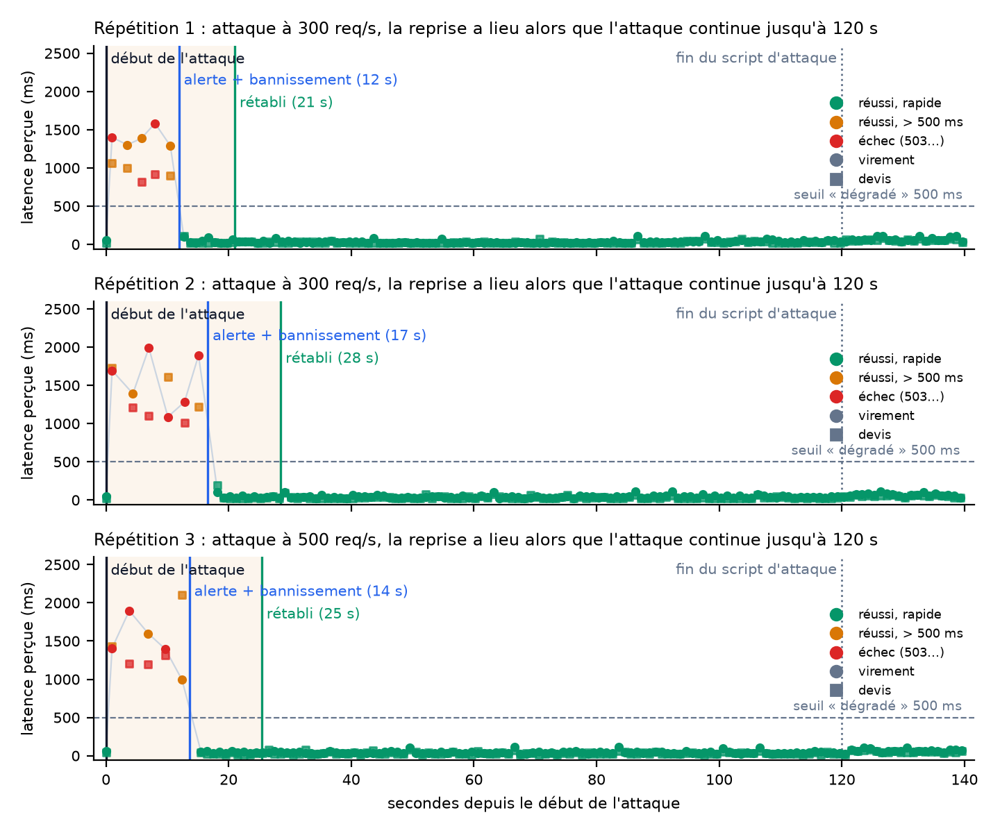
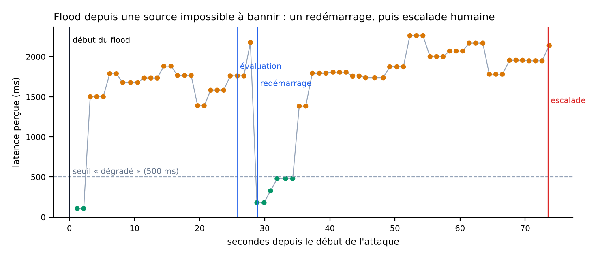

Une plateforme de paiement fictive qui détecte une attaque, se défend, se répare seule, puis le prouve par une vraie transaction.
| Équipe | G? : numéro et noms à compléter |
| Formation | EPSI, M2 (Bac+5), Workshop 2026 |
| Livrables | Ce dossier · présentation · vidéo chronométrée de 60 s · archive de code · démonstration en direct |
| Périmètre | Plateforme et données entièrement fictives ; scripts d'attaque limités aux réseaux privés |
Le scénario retenu est une saturation applicative : un attaquant inonde un endpoint public coûteux de l'API de paiement. Sans aucun geste humain, la chaîne suivante s'exécute : un détecteur d'anomalies (Isolation Forest) alerte, un moteur de remédiation décide parmi une liste fermée d'actions (bannir une IP, redémarrer un service autorisé), puis une sonde synthétique exécute une transaction réelle de bout en bout et contrôle un invariant comptable avant de déclarer le service « rétabli ». Chaque décision est tracée.
Ce que nous avons réellement exécuté. La plateforme complète (16 conteneurs lors des répétitions ; un 17e, face-gate, a été ajouté ensuite pour la consigne additionnelle) a été construite et démarrée sous Docker Desktop, déployée par le chemin officiel du sujet (secrets chiffrés SOPS + age, playbooks Ansible exécutés depuis WSL), puis attaquée trois fois de suite (300, 300 et 500 requêtes par seconde) pendant qu'un client légitime effectuait un devis et un virement chaque seconde. Les trois répétitions ont réussi : l'attaque est détectée en 12 à 17 s, l'attaquant est banni, le service est rétabli et prouvé 21 à 29 s après le début de l'attaque, alors que l'attaque continue encore plus de 90 s, et 100 % des virements du client légitime aboutissent ensuite. Pendant l'incident, devis et virements échouent franchement (HTTP 503) pour tous les clients, pas seulement l'attaquant : la dégradation est réelle, pas simulée.
Consigne additionnelle 1 (authentification biométrique). L'accès au back-office se fait désormais en trois étapes : identifiant, reconnaissance faciale par la caméra USB du PC Hôte, mot de passe, avec un voyant bicolore piloté par un ESP8266 sur le WiFi du hotspot (éteint par défaut ; vert clignotant puis fixe 30 s en cas de succès ; rouge fixe 30 s ou clignotant 10 fois en cas d'échec ; blocage de 5 minutes après deux visages non reconnus). La gestion complète des habilitations (rôles, permissions, visages, voyant, audit) est dans le back-office. Vérifié de bout en bout à travers le pare-feu avec une caméra simulée et les vrais délais, interface testée dans un navigateur, firmware compilé (PlatformIO). Non vérifié : vraie caméra et vrais visages (qualité de reconnaissance, seuil), ESP8266 physique (jamais flashé), détection de vivacité (absente : une photo peut tromper le modèle). Voir le chapitre 6.
Ce que nous n'avons pas pu vérifier : l'attaque depuis un second ordinateur et l'adresse IP source réellement vue par le pare-feu dans ce cas (sur un seul poste, nous avons constaté que le pare-feu ne voit que la passerelle Docker et avons simulé les identités), l'assistant opérateur avec un vrai modèle Ollama, et la vidéo de 60 s. Ces points figurent au chapitre 10 avec la procédure de vérification.
| Chiffre | Valeur | Origine |
|---|---|---|
| Détection après le début de l'attaque | 11,9 / 16,6 / 13,6 s | 3 répétitions sous Docker |
| Début de l'attaque → service rétabli et prouvé | 21,0 / 28,5 / 25,4 s (attaque de 120 s) | idem |
| Détection → service rétabli et prouvé | 9,1 / 11,8 / 11,8 s | idem |
| Client légitime : pire devis / pire virement | 1,1 à 2,1 s / 1,6 à 2,0 s, avec erreurs 503 (≈ 20-40 ms hors incident) | idem |
| Virements du client légitime réussis après la reprise | 100 % (89 à 97 virements par répétition) | idem |
| Score d'anomalie au repos / pendant l'attaque | 0,40 à 0,58 / 0,77 (seuil : 0,70) | détecteur entraîné sur 132 min |
| Tests automatisés | 135 tests passent (WAF 37, moteur 19, ML 8, RAG 10, tableau de bord 6, face-gate 28, auth-service 15, agent caméra 12), plus un test de bout en bout du parcours biométrique | exécutés |
Le sujet demande une plateforme qui résiste à une attaque lancée depuis un second ordinateur et se rétablit sans intervention, en mobilisant cinq piliers : développement, infrastructure, IA et données, cybersécurité, gouvernance. Un geste humain pendant la démonstration en direct ramène l'axe « autonomie » à zéro : la conception part donc du principe que personne ne touchera à rien.
Nous avons choisi la saturation applicative plutôt qu'une attaque réseau volumétrique pour trois raisons. Elle est reproductible depuis un seul poste sans équipement particulier. Elle produit un symptôme mesurable (latence, erreurs 5xx, CPU) que le ML peut apprendre. Et elle a une réponse en deux temps qui illustre bien l'autonomie : contenir la source, puis réparer seulement si nécessaire. Un scénario secondaire (injection SQL et scan) montre la différence entre rétablir la disponibilité et contenir une tentative de compromission, où la bonne réponse n'est jamais un redémarrage.
Le critère de succès retenu est strict : le service n'est « rétabli » que si une transaction réelle réussit (devis, authentification, paiement entre deux comptes de test, relecture), que la somme des soldes est inchangée (un paiement déplace de l'argent, il n'en crée ni n'en détruit : si ce total bouge, des données sont corrompues) et que le chemin public reste rapide pendant 8 secondes consécutives. Un simple « le conteneur répond » ne suffit pas.

Le trafic entre par un pare-feu applicatif (WAF) développé pour le projet, qui expose trois écouteurs : public (clients et attaquant), interne (sonde de vérification, jamais bannie) et administration (jeton, métriques). Les services métier (authentification, paiement) et la base ne sont joignables que par le réseau interne. L'observabilité (Prometheus, Loki, Grafana) alimente le détecteur et l'analyse d'incident ; le détecteur n'a pas d'autre pouvoir que d'envoyer une alerte au moteur, qui possède seul le droit d'agir, et le fait uniquement dans une liste fermée. Les interfaces de gestion (Grafana, tableau de bord, assistant) sont liées à 127.0.0.1 et ne sont jamais joignables depuis le PC Attaquant.
API de paiement et d'authentification (FastAPI, PostgreSQL). Les requêtes SQL sont paramétrées (aucune concaténation), les entrées validées par Pydantic. Un paiement vérifie que le compte débité appartient à l'utilisateur authentifié (une tentative d'accès au compte d'autrui renvoie 403, testé), verrouille les lignes concernées, est idempotent (clé d'idempotence) et trace aussi les rejets. L'authentification utilise un hachage scrypt, des jetons JWT de 15 minutes, une réponse identique pour un utilisateur inconnu (pas d'énumération) et un verrouillage après 5 échecs en 5 minutes. Chaque service se connecte à la base avec un rôle SQL distinct à droits minimaux : le service de paiement ne peut pas lire la table des utilisateurs (testé).
Un endpoint volontairement coûteux et une capacité bornée. Le devis de frais (/api/fees/quote) est public et réalise un calcul de scoring de risque (PBKDF2) puis une lecture en base. La capacité du service de paiement est bornée : 0,5 CPU, pool de 3 connexions à la base, attente maximale de 0,4 s pour en obtenir une. Ce réglage a été trouvé en mesurant : avec un pool plus large, le service ralentissait sous attaque mais répondait toujours (devis et virements réussissaient, simplement plus lentement), donc l'incident n'était pas démontrable. Avec ces valeurs, devis et virements échouent franchement (HTTP 503) pour tous les clients tant que la source n'est pas bannie, puis redeviennent immédiatement normaux.
Portail et tableau de bord (React 18, Tailwind 3, Vite). Le portail permet de se connecter et d'effectuer un paiement ; le tableau de bord interroge le moteur toutes les secondes et montre l'état perçu par un client, la latence avant, pendant et après l'incident, la chronologie des décisions et les cinq étapes de la vérification transactionnelle. L'état est porté par un texte et une couleur, pas par la couleur seule. Il a été construit, testé (6 tests) et contrôlé visuellement sur les données réelles du moteur. La politique de sécurité du contenu est stricte (aucun script en ligne).
Conteneurs et segmentation. La composition définit 17 services sur quatre réseaux (edge, app, ops, mgmt), dont deux internes sans accès sortant ; le sous-réseau edge est fixé. Les conteneurs tournent sans privilèges (utilisateur non root, cap_drop: ALL, système de fichiers en lecture seule, limites de ressources) et disposent de sondes de santé. Elle a été construite et démarrée sous Docker Desktop : 17 services sains, test de fumée métier réussi.
Accès à Docker. Le moteur de remédiation n'a jamais le socket Docker : il passe par un proxy filtré qui n'autorise que les opérations de lecture et le redémarrage, et il vérifie en plus qu'un conteneur porte l'étiquette resilience.remediable=true avant tout redémarrage. Un budget limite à 3 redémarrages par fenêtre de 5 minutes. Limite connue : le proxy autorise aussi l'arrêt et l'extinction forcée ; la restriction repose sur le moteur, pas sur le proxy (risque résiduel R4). Un second proxy, en lecture seule, sert Promtail pour la collecte des journaux.
Secrets. Les secrets sont générés aléatoirement, chiffrés avec SOPS et age, déchiffrés dans un dossier ignoré par git et montés comme secrets Docker (fichiers, jamais variables d'environnement). Le cycle complet a été exécuté sur le poste : génération, chiffrement, déchiffrement par le playbook de déploiement, démarrage avec ces secrets ; aucune clé privée dans le dépôt. La clé privée age doit être sauvegardée hors dépôt (sans elle, les secrets sont irrécupérables).
Automatisation (Ansible). Quatre playbooks, tous exécutés depuis Ubuntu 24.04 sous WSL : déploiement (déchiffrement des secrets, construction, démarrage avec attente de santé, test de fumée : 7 tâches sur 7 réussies), sauvegarde de la base, restauration (19 s, test de fumée compris) et remise à zéro de la démonstration (12 s). Rôle des outils : Docker Compose décrit et exécute les conteneurs ; Ansible orchestre et vérifie (prérequis, secrets, construction, démarrage, preuve de santé) ; SOPS protège les secrets.
Observabilité. Prometheus collecte les services, Grafana affiche dix panneaux (service perçu, score d'anomalie, bans, débit, latence, erreurs, CPU, incidents, durée de reprise, journaux), Loki centralise les journaux : un événement d'audit y apparaît en moins de 15 s (vérifié). Deux écarts constatés et traités : le proxy de lecture bloquait l'appel dont Promtail a besoin (Loki restait vide, corrigé en autorisant cet appel en lecture seule) ; sous Docker Desktop, cAdvisor ne voit que l'hôte et jamais les conteneurs individuels, d'où l'usage des métriques de processus exposées par le service de paiement. Le dépôt documente l'installation et la relance (README, deux chemins : démarrage rapide PowerShell et déploiement officiel sous WSL). Sur un réseau qui intercepte TLS, la vérification des certificats au build peut être désactivée par deux variables explicites ; elle reste active par défaut.
Détecteur d'anomalies (Isolation Forest). Sept mesures lues dans Prometheus toutes les 5 secondes : débit total, débit maximal d'une IP, latence p95 (fenêtre de 60 s), proportions de 4xx et 5xx, CPU du service de paiement, connexions actives. Les mesures asymétriques passent en logarithme. Le score est normalisé de sorte que 0,70 soit le seuil, fixé au quantile 99,9 % d'un jeu de validation de trafic normal. Pour éviter les fausses alertes, l'alerte n'est émise que si 3 échantillons sur 4 dépassent le seuil, et un seul incident est ouvert par épisode. Une métrique absente fait ignorer l'échantillon au lieu de la remplacer par zéro (ce qui fabriquerait de l'anormal). La qualification « disponibilité », « compromission » ou « inconnue » est une heuristique sur les mesures qui dépassent leur norme ; la classe « inconnue » ne déclenche aucune action automatique.
Données d'entraînement. Une session de 132 minutes génère du trafic légitime réaliste : 9 phases actives de 8 à 14 min d'intensité variable (1 à 3 clients par source, avec des rafales légitimes) alternées avec 9 phases d'inactivité réelle (3 à 7 min), soit 1 609 échantillons dont 29 % au calme. Le détecteur est arrêté pendant la collecte. Les données sont découpées en blocs alternés (7 blocs sur 10 pour l'entraînement, 3 pour fixer le seuil).
| Mesure | Résultat |
|---|---|
| Score sur les données normales (seuil 0,70) | moyenne 0,45 ; 0,44 % des échantillons au-dessus du seuil (un incident exige 3 sur 4 consécutifs) |
| Score au repos, 5 minutes en direct | entre 0,40 et 0,58 ; aucun des 58 échantillons au-dessus du seuil |
| Trois attaques réelles (300, 300, 500 req/s) | score 0,77 à chaque fois, classe « disponibilité », détection en 12 à 17 s |
Ce que les données réelles nous ont appris (détail au chapitre 9) : cinq défauts, tous invisibles avec le simulateur, ont été trouvés et corrigés. Une variable à variation quasi nulle (mémoire du processus) a suffi, par un seul relevé à son maximum, à gonfler le seuil au point qu'une attaque réelle (7 variables sur 8 largement hors norme) scorait moins qu'un repos : elle a été retirée. Un découpage entraînement/validation « début/fin » plaçait toute la période de calme dans la validation : le modèle n'apprenait jamais que le repos est normal. Un faux incident survenu pendant la collecte a banni le générateur de trafic lui-même et contaminé 10 % d'un jeu d'entraînement : l'entraînement rejette désormais les lignes à taux d'erreur anormal.
Limites. 132 minutes restent proches du minimum raisonnable ; un redémarrage du PC a déjà suffi à déplacer la ligne de base : le modèle doit être réentraîné après tout changement de l'hôte ou de la plateforme (procédure et score de repos attendu documentés). Une attaque lente et discrète, sans dégradation visible, n'est pas détectée par ces mesures.
Assistant opérateur (RAG local). LangChain et Ollama (modèle de 7 à 8 milliards de paramètres, embeddings dédiés) répondent aux questions des opérateurs à partir de la documentation de l'équipe, avec les sources citées. Conception défensive : aucun outil et aucun agent (la chaîne est recherche, prompt, texte), aucun accès réseau vers le moteur de remédiation, aucun secret, et les documents sont traités comme des données (le prompt interdit d'obéir aux instructions qu'ils contiennent : injection de prompt indirecte). Si rien de pertinent n'est retrouvé, il le dit. Les 10 tests passent avec un faux modèle ; le modèle Ollama réel n'a pas été exécuté et le seuil de pertinence des embeddings n'est pas calibré.
Pare-feu applicatif. Règles de type « CRS-lite » à score d'anomalie (blocage dès 5) : injection SQL, XSS, traversée de chemin, exécution de commande, scanners connus. 37 tests passent, dont 17 attaques bloquées et 8 requêtes légitimes laissées passer. Il refuse les corps trop gros (413) et la méthode TRACE (405), masque l'en-tête serveur et ne journalise jamais ni corps de requête ni en-tête d'authentification. Le bannissement est par adresse unique, avec durée de vie, plafond, persistance et garde-fou anti-verrouillage (l'adresse du PC Hôte et le bouclage local ne sont jamais bannis). Le WAF ne bloque volontairement pas sur le débit : c'est la chaîne ML qui décide, ce qui évite de bannir un client légitime.
SIEM. Neuf règles d'alerte Prometheus (force brute d'authentification, blocages par signature, source bannie, service dégradé, escalade, composant arrêté, et trois pour la biométrie : échecs de visage, caméra allumée trop longtemps, voyant hors ligne), étiquetées MITRE ATT&CK, validées avec l'outil officiel promtool. Journaux JSON centralisés dans Loki, interrogeables dans Grafana (par exemple les requêtes refusées pour ban ou les bannissements décidés). Alertmanager n'a pas été exécuté.
Équipe rouge. Deux scénarios scriptés avec garde-fous : refus de toute cible hors réseau privé (le bouclage local exige un indicateur explicite), acte explicite requis, durée et débit plafonnés, aucune charge utile malveillante réelle (testés). Un script de répétition rejoue l'attaque, un client légitime et la lecture de l'incident, puis rend un verdict automatique sur cinq critères (chapitre 9).
Docker Desktop ne transmet pas une caméra USB à un conteneur Linux : la caméra et la reconnaissance faciale tournent donc sur le PC Hôte, dans un petit agent Python (OpenCV : détecteur de visage YuNet, reconnaissance SFace, empreinte de 128 nombres, calcul léger sur processeur). Le service face-gate, dans la pile, prend toutes les décisions : machine à états de la connexion, comparaison aux empreintes enregistrées, blocage, pilotage du voyant. Le pare-feu route /gate/ vers lui.

| Exigence de la consigne | Réalisation | Vérifié par |
|---|---|---|
| Caméra entre l'identifiant et le mot de passe ; non reconnu : identifiant effacé, caméra éteinte | Caméra ouverte à la demande avec chien de garde ; visage non reconnu : identifiant vidé, voyant rouge fixe 30 s, puis caméra éteinte | Test de bout en bout, tests de face-gate |
| Un nouvel essai, puis blocage de 5 minutes, de façon répétée | Compteur par identifiant ; le blocage se répète (testé) | Test de bout en bout : 429 avec 5 min restantes, même avec le bon visage |
| Voyant : éteint par défaut ; vert clignotant jusqu'au mot de passe ; vert fixe 30 s si correct ; rouge clignotant 10 fois si faux ; rouge fixe 30 s si non reconnu | Le serveur décide, l'ESP8266 interroge chaque seconde et reproduit le motif ; il s'éteint seul en cas d'échéance ou de silence du serveur (échec sûr) | Figure 5 (séquence mesurée : vert fixe 30,3 s), logique du firmware testée sur PC, firmware compilé |
| IA légère de reconnaissance sur l'hôte | YuNet + SFace (OpenCV), modèles vérifiés par somme de contrôle | Tests de l'agent (caméra simulée) ; non essayée sur de vrais visages |
| Gestion complète des habilitations et des visages dans le back-office | Rôles et permissions en base, portées par le jeton ; pages utilisateurs, rôles, visages, voyant, audit ; pas d'escalade de privilèges | Tests (permissions refusées, un opérateur ne gère pas les utilisateurs), interface essayée dans un navigateur |
| ESP8266 programmé avec CLion et PlatformIO | Projet firmware/esp8266-led (PlatformIO, ouvert dans CLion) ; câblage et procédure documentés | Compilation réussie (RAM 35 %, flash 28 %) ; jamais flashé sur un ESP8266 |

Sécurité de la conception. Un mot de passe volé ne suffit pas : auth-service refuse un jeton à un compte « visage exigé » sans ticket facial signé, à usage unique, valable 120 s, que seul face-gate peut émettre (vérifié : mot de passe correct seul, HTTP 403). Les empreintes sont chiffrées (AES-256-GCM, clé distincte) et aucune image n'est conservée. La caméra n'est allumée que pendant une session, puis éteinte même si le service tombe. En cas d'agent indisponible, l'accès est refusé (échec fermé). Les interrogations de l'ESP ne sont pas comptées dans les mesures de trafic du détecteur ML (le score au repos reste à 0,40-0,50). Limites assumées : pas de détection de vivacité, seuil de similarité non calibré sur de vrais visages, HTTP en clair entre l'ESP et le PC.
Le moteur est le composant le plus sensible : il a le pouvoir d'agir. Sa conception repose donc sur des règles courtes, testables (19 tests) et fermées. Chaque incident suit une machine d'états : DETECTED → DECIDING → REMEDIATING → VERIFYING, puis l'une de trois issues : RECOVERED (service rétabli et prouvé), CONTAINED (compromission contenue, humain requis) ou ESCALATED (le moteur n'a pas pu conclure, humain requis).
| Situation | Décision du moteur | Pourquoi |
|---|---|---|
| Classe « disponibilité », une ou plusieurs sources à ≥ 30 req/s | Bannir ces sources (3 au maximum, jamais l'IP de l'hôte), attendre le retour d'un service sain | Contenir la cause avant de toucher au service |
| Service encore dégradé après le bannissement | Redémarrer UNE fois le service autorisé et étiqueté, attendre qu'il soit sain | Un redémarrage n'est qu'un dernier recours |
| Aucune source à bannir (débit faible, ou source protégée) | Passer directement à l'évaluation de santé, puis au redémarrage si nécessaire | L'attaque peut être distribuée ou masquée |
| Classe « compromission » | Bannir, vérifier la disponibilité, conclure CONTAINED ; jamais de redémarrage | Préserver les preuves, ne pas relancer un composant possiblement piégé |
| Classe « inconnue » | Aucune action automatique, ESCALATED | Une anomalie sans signature ne justifie pas d'agir seul |
| Vérification qui n'aboutit pas dans le délai | ESCALATED (après un éventuel dernier redémarrage s'il n'y en a pas eu) | Ne jamais affirmer un rétablissement non prouvé |
| Plus de 3 redémarrages en 5 minutes | Refus (budget épuisé) | Éviter une boucle de redémarrage qui aggrave l'incident |
Les entrées sont validées strictement : une cible hors de la liste autorisée, un identifiant mal formé ou une classe hors énumération sont rejetés. Les seules actions possibles sont BAN_IP et RESTART_SERVICE ; il n'existe aucune action « exécuter une commande ». Les données qui viennent du détecteur (adresses, éléments de preuve) sont traitées comme non fiables et bornées en taille. Les messages affichés au jury sont rédigés pour un non-spécialiste (« un vrai paiement test est tenté, puis on contrôle qu'aucun argent n'a été perdu ni dupliqué »).
EBIOS Risk Manager. Quinze risques cotés en gravité et vraisemblance, des mesures reliées à des preuves vérifiables dans le dépôt, puis un risque résiduel. Le plus important est celui que la plateforme introduit elle-même en se défendant : un moteur capable de redémarrer des conteneurs est une cible de choix. C'est pourquoi c'est le composant le plus contraint du projet (liste fermée d'actions, cibles autorisées, étiquette obligatoire, budget de redémarrages, réseau interne, jeton).
| Risque | Initial | Résiduel | Commentaire |
|---|---|---|---|
| Saturation applicative | 16 critique | 6 moyen | Prouvé par 3 répétitions ; reste exposé à une attaque distribuée sous 30 req/s par source |
| Injection | 12 critique | 4 moyen | WAF = sous-ensemble de règles, pas de CRS complet |
| Détournement du moteur | 8 élevé | 4 moyen | Le proxy Docker permet aussi arrêt et extinction forcée |
| Faux positif du ML | 9 élevé | 4 moyen | Réalisé pendant la mise au point : un modèle sous-entraîné a fait bannir toute la passerelle pendant 10 min ; corrigé, bornes conservées |
| Usurpation / masquage de l'IP source | 9 élevé | 6 moyen | Constaté sur un seul poste (le WAF ne voit que la passerelle) ; à vérifier avec un second PC |
| Chaîne d'approvisionnement | 8 élevé | 8 élevé | Non traité : aucun scan d'images |
| Interception du trafic en clair | 6 moyen | 6 moyen | Écart assumé : pas de TLS |
| Usurpation du visage (photo, vidéo) | 12 critique | 8 élevé | Deux facteurs et blocage, mais aucune détection de vivacité |
| Fuite des empreintes faciales (RGPD art. 9) ; détournement de la caméra | 8 / 6 | 4 / 3 | Chiffrement, minimisation, caméra éteinte par défaut avec chien de garde ; analyse d'impact à faire |
| Verrouillage d'un administrateur ou caméra indisponible | 9 élevé | 6 moyen | Échec fermé voulu ; accès de secours depuis le PC Hôte, documenté |
PCA / PRA. Objectifs, scénarios (saturation, service planté, compromission, base corrompue, perte de l'hôte, perte de la clé de chiffrement, caméra indisponible), ordre de reconstruction et faiblesses assumées. Mesuré sous Docker : reprise sur saturation en 9 à 12 s après la détection, sauvegarde de la base, restauration en 19 s, remise à zéro de la démonstration en 12 s. Faiblesses : sauvegardes sur le même hôte, non chiffrées, non planifiées, restauration rejouée sur une base de démonstration et non sur une base corrompue. Règle de conception : une compromission suspectée est contenue mais jamais redémarrée, car un redémarrage détruirait les preuves.
NIS2 et DORA. Une cartographie exigence par exigence (couvert, partiel, écart) avec preuve et écart pour chacune. Nous ne prétendons à aucune conformité. Le prototype démontre surtout deux exigences : détecter et contenir automatiquement, et prouver la reprise avec une traçabilité complète. Il laisse volontairement aux humains ce qui engage la responsabilité : décider d'une notification, accepter un risque, escalader une compromission.
Trois répétitions sous Docker. Chaque répétition lance l'attaque pendant 120 s, joue en parallèle un client légitime (devis + virement chaque seconde) et lit l'incident côté moteur, sans intervention. Le verdict automatique exige cinq critères : incident RECOVERED, IP bannie = celle de l'attaquant (jamais la passerelle), reprise pendant que l'attaque continue, au moins 95 % de virements réussis après la reprise, dégradation réellement observée avant (tableau ci-dessous et figure 2).
| N° | Attaque | Détection | Reprise | Détection → reprise | Pire devis / virement | Virements OK après | Verdict |
|---|---|---|---|---|---|---|---|
| 1 | 300 req/s | 11,9 s | 21,0 s | 9,1 s | 1,06 / 1,58 s | 100 % | RÉUSSI |
| 2 | 300 req/s | 16,6 s | 28,5 s | 11,8 s | 1,73 / 1,99 s | 100 % | RÉUSSI |
| 3 | 500 req/s | 13,6 s | 25,4 s | 11,8 s | 2,10 / 1,90 s | 100 % | RÉUSSI |
Ce que ces essais ne prouvent pas. L'attaquant est simulé sur la même machine que la plateforme, par l'en-tête X-Forwarded-For. Ils démontrent la chaîne détection → décision → reprise → preuve par transaction, pas la capture de la vraie adresse IP d'un second PC.
Le cas défavorable (banc natif antérieur). Si l'attaquant est impossible à bannir (par exemple parce que son adresse est masquée), le moteur constate que le service reste dégradé, redémarre le service de paiement une fois, observe quelques secondes de répit, puis l'attaque reprend (figure 3). La vérification de stabilité de 8 secondes échoue (0/8) et l'incident se termine par ESCALATED après 49 s : un humain doit agir. C'est la bonne issue, mais ce n'était pas le comportement initial.
Scénario injection. 37 requêtes malveillantes (injection SQL, traversée, XSS, User-Agent de scanner) : 37 refus 403 par le WAF, aucune ne parvient à l'API, pas d'incident ML (score 0,55 pour un seuil de 0,70), ce qui est attendu : ce scénario relève du WAF et de l'alerte SIEM, et son issue correcte est le confinement, pas un redémarrage (banc natif ; à rejouer sous Docker).


Ces essais ont plus de valeur par ce qu'ils ont révélé que par leurs chiffres :
| Défaut observé | Conséquence | Correction |
|---|---|---|
| Le moteur déclarait « rétabli » après un répit de quelques secondes sous attaque continue | Fausse assurance : le service retombait aussitôt (33 mesures dégradées) | Observation continue du chemin public pendant 8 s ; sinon escalade |
| Séries d'erreurs 4xx/5xx absentes tant qu'il n'y a pas d'erreur | Détecteur aveugle (valeurs manquantes) | Valeur zéro explicite dans les requêtes |
| Compteurs de blocage et d'échec de connexion créés au premier événement | increase() et rate() ignorent la première valeur : la première rafale d'une instance neuve échappait aux alertes | Séries créées à zéro au démarrage |
| Service ralenti mais toujours disponible sous attaque (pool large) | Devis et virements réussissaient : aucun incident démontrable | Pool de 3 connexions, attente de 0,4 s : échecs 503 francs |
| Variable mémoire quasi constante en fonctionnement normal | Un seul relevé au maximum a gonflé le seuil : une attaque réelle scorait moins qu'un repos | Variable retirée du modèle |
| Découpage entraînement/validation en début/fin | Période de calme jamais apprise : repos presque aussi « anormal » qu'une attaque, détecteur qui ne se réarme pas | Découpage en blocs alternés, session de collecte avec phases d'inactivité |
| Faux incident pendant la collecte de trafic « normal » | La passerelle Docker a été bannie 10 min ; 10 % du jeu d'entraînement contaminés | Détecteur arrêté pendant la collecte ; rejet automatique des lignes à erreurs > 30 % |
| Latence p95 sur 30 s trop bruitée au repos | Dépassements de seuil sans cause | Fenêtre portée à 60 s |
| Loki vide | Journaux non centralisés (le proxy Docker en lecture répondait 403) | Appel autorisé en lecture seule ; ingestion vérifiée en direct |
| Disque Windows monté dans WSL : droits Unix refusés | Déchiffrement des secrets et sauvegarde en échec | Option de montage metadata, utilisateur dédié, script tolérant |
Nous préférons lister ce qui n'a pas été prouvé plutôt que le laisser deviner au jury.
| Élément | Statut | Que faire |
|---|---|---|
| Attaque depuis un second PC, IP source vue par le WAF | Non vérifié : risque principal | Lancer l'attaque depuis le PC Attaquant via le point d'accès sans fil, lire client_ip dans les journaux du WAF, laisser TRUSTED_PROXIES vide ; sinon placer un proxy natif |
| Composition Docker, Ansible, secrets SOPS + age | Exécutés (17 services sains) | Rejouer sur le PC Hôte final |
| Prometheus, Grafana, Loki, Promtail, proxys Docker | Vérifiés | Alertmanager non exécuté ; cAdvisor ne voit que l'hôte (métriques de processus utilisées) |
| RAG avec le modèle Ollama réel | Non exécuté | Installer Ollama, calibrer le seuil de pertinence avec 5 questions du domaine et 5 hors domaine |
| Modèle ML sur la pile réelle | Entraîné (132 min) | Réentraîner après tout changement de l'hôte ; viser ≥ 2 h |
| Chiffrement du transport (TLS), scan d'images ; MFA pour les clients du portail | Écarts assumés | Premiers sujets d'une feuille de route |
| Reconnaissance faciale avec une vraie caméra USB et de vrais visages | Non vérifié (caméra simulée uniquement) | Lancer host-agent/selftest.py, inscrire des visages réels, mesurer faux rejets et faux accepts, ajuster FACE_THRESHOLD |
| Firmware sur un ESP8266 physique | Compilé et logique testée, jamais flashé | Câbler la LED (GPIO5 vert, GPIO4 rouge), tools/make_firmware_config.py, flasher depuis CLion, HOST_IP = IP du hotspot |
| Détection de vivacité (photo, vidéo) | Absente | Caméra infrarouge ou défi aléatoire (clignement, tour de tête) |
| Vidéo chronométrée de 60 s sans coupure | Non produite | À filmer lors d'une exécution réelle depuis le PC Attaquant |
Détail du détecteur. La détection arrive 12 à 17 s après le début : la fenêtre de 3 échantillons sur 4 avec un tick de 5 s en est la cause principale. Réduire ce délai augmente le risque de faux positifs ; c'est l'arbitrage principal à présenter. Une attaque lente et discrète, sans dégradation visible, n'est pas détectée. La qualification « disponibilité » ou « compromission » est une heuristique, pas une prédiction du modèle.
Feuille de route. TLS interne, détection de vivacité et MFA étendue au portail ; remplacement du WAF par ModSecurity ou Coraza avec jeu de règles complet ; limitation de débit globale et protection anti-DDoS en amont ; scan et signature des images ; orchestrateur à droits fins à la place du proxy Docker ; sauvegardes chiffrées hors hôte ; mode « suggestion » du ML avant l'automatisation complète.
La démonstration doit se faire sans aucun geste humain entre le lancement de l'attaque et le retour à la normale : toute intervention fait passer l'axe d'autonomie à « non démontré ». Le déroulé est donc entièrement scripté et répété.
| Étape | Action | Ce que le jury voit |
|---|---|---|
| 1 | Ouvrir le tableau de bord | État « OPÉRATIONNEL », latence de référence (≈ 20-40 ms) |
| 2 | PC Attaquant : lancer le flood (300 req/s, 120 s, cible privée, acte explicite requis) | Le service passe en dégradé, devis et virements échouent (503) |
| 3 | Ne rien toucher | Alerte du détecteur (≈ 12-17 s), décision, bannissement de l'IP, retour à des latences normales (≈ 21-29 s) alors que l'attaque continue |
| 4 | Lire la chronologie et la vérification | Cinq étapes réussies : devis, connexion, paiement, relecture, grand livre ; puis 8 s de stabilité |
| 5 | Répéter une transaction depuis le portail | Un paiement réel aboutit alors que l'attaque se poursuit (l'attaquant est refusé) |
| 6 | Montrer l'audit et les alertes | Journal d'audit du moteur, journaux dans Grafana/Loki, assistant opérateur citant la procédure |
Plan de vérification avant la démonstration (sur le PC Hôte final, dans cet ordre) : démarrer la composition et vérifier que tous les conteneurs sont sains ; confirmer que le WAF voit l'adresse réelle du PC Attaquant (TRUSTED_PROXIES vide) ; réentraîner le détecteur si le score au repos n'est pas entre 0,40 et 0,58 ; rejouer l'attaque trois fois depuis le PC Attaquant avec le script de répétition (option sans attaque locale) en notant détection et reprise ; tester la sauvegarde et la restauration ; installer Ollama et calibrer l'assistant ; filmer la vidéo de 60 secondes sur une exécution réelle.
| Pilier | Technologies mises en œuvre | Preuve vérifiable dans l'archive |
|---|---|---|
| Développement | FastAPI, PostgreSQL, React 18, Tailwind 3, Vite | Tests du tableau de bord (6) ; test de fumée métier ; contrôles d'accès testés (403, rôle SQL, verrouillage 429) |
| Infrastructure | Docker Compose (4 réseaux, 17 services), docker-socket-proxy, Ansible, SOPS + age, Prometheus, Loki, Grafana | Déploiement Ansible exécuté (7/7), sauvegarde, restauration, remise à zéro ; secrets chiffrés ; scanner de secrets ; ingestion Loki vérifiée |
| IA et Données | scikit-learn (Isolation Forest), LangChain, Ollama | 8 tests du détecteur, 10 du RAG ; session d'entraînement de 132 min ; 3 répétitions réelles (tests/rehearsals/) ; Ollama NON exécuté |
| Cybersécurité | WAF applicatif, règles Prometheus (SIEM), Loki, scénarios d'équipe rouge, SOPS | 37 tests WAF ; règles validées par promtool (banc natif) ; attaque d'injection bloquée à 100 % (37/37, banc natif) |
| Gouvernance | EBIOS Risk Manager, PCA/PRA, cartographie NIS2 et DORA | Dossier governance/ relié aux mesures et aux preuves, écarts assumés listés |
Contribution de chacun (à compléter avec les noms de l'équipe : le sujet exige qu'elle soit visible).
| Domaine | Réalisations principales | Membre(s) |
|---|---|---|
| Développement | API de paiement et d'authentification, portail, tableau de bord, moteur de remédiation | à compléter |
| Infrastructure | Composition Docker, playbooks Ansible, secrets SOPS + age, observabilité (Prometheus, Loki, Grafana) | à compléter |
| IA et Données | Détecteur d'anomalies, session d'entraînement, assistant RAG | à compléter |
| Cybersécurité | Pare-feu applicatif, règles SIEM, scripts d'attaque et de répétition | à compléter |
| Gouvernance | EBIOS RM, PCA/PRA, cartographie NIS2 et DORA, dossier et présentation | à compléter |
Les tests s'exécutent avec les commandes listées dans le fichier README.md de l'archive ; les résultats d'exécution de bout en bout (JSON, chronologies, journaux d'attaque, graphiques) sont dans tests/rehearsals/ (Docker) et tests/e2e/results/ (banc natif antérieur).